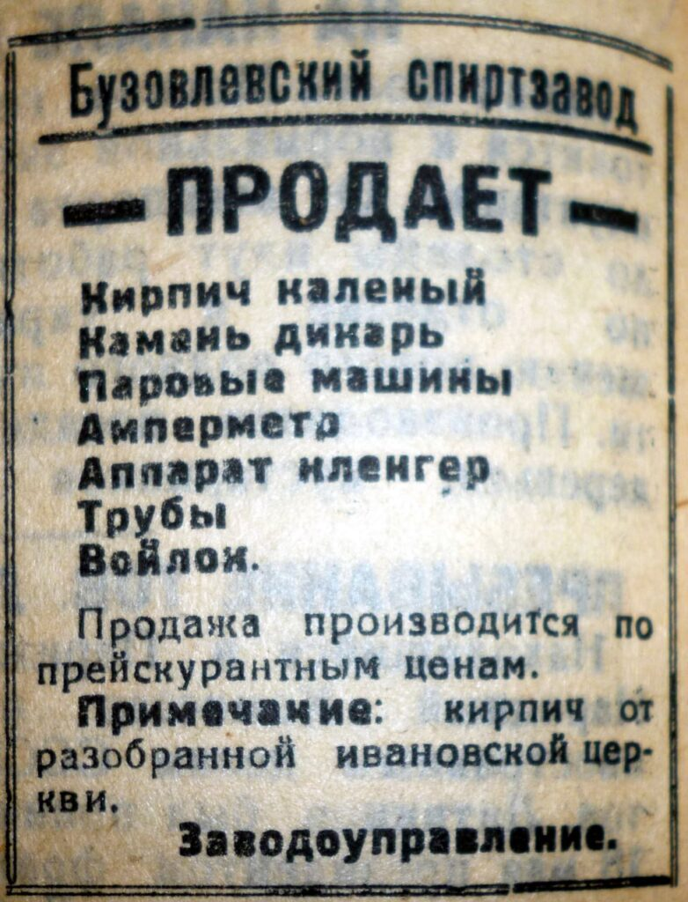

Глава IV
Фисейские: вторая духовная река
Каменские — моя отцовская фамилия. Но рядом с ними в книге стоят Фисейские. Эта линия входит в нашу семью через Анну Константиновну Фисейскую-Каменскую, мою прабабушку и жену Евгения Ивановича. Начинается она раньше — со Степана Михайловича Фисейского, родившегося в 1788 году. В источниках он указан как диакон. Его служение связано с Сердобском: Архангельским собором, Казанской Нагорной и Казанской Заречной церквями.
История Фисейских связана с духовными семинариями. В XVIII–XIX веках многие выходцы из семей духовенства получали фамилии уже в учебной среде. Для них образование становилось не только дорогой к служению, но и началом семейного имени.

Фамилия Фисейский требует отдельного внимания. По одной из версий, она могла возникнуть в духовной учебной среде и быть связана с именем Тесея — легендарного героя Афин. В старой русской передаче греческая θ часто переходила в «ф»: Феодор восходит к Theodoros, Фома — к Thomas. Поэтому переход от Тесея к форме Фисей / Фисейский выглядит возможным. Но документа, который прямо объясняет происхождение фамилии, у меня пока нет.
Поэтому я оставляю эту версию как гипотезу. Если она верна, фамилия Фисейский несёт образ устроителя и защитника. В судьбах Макария Степановича и Константина Макаровича действительно есть много созидательного: служение, строительство храмов, забота о приходе и образовании. Через Анну Константиновну эта линия вошла в дом Каменских и стала частью нашей семейной истории.

Анна Константиновна Каменская, урождённая Фисейская
Моя прабабушка, дочь священника Константина Макаровича
Фисейского и жена моего прадеда Евгения Ивановича Каменского.
Анна Константиновна Фисейская родилась 23 сентября 1886 года. В 1904 году она окончила Саратовское Иоанникиевское епархиальное женское училище.

Для девушки из духовной семьи такое образование было частью того мира, в котором жили её отец и дед. Позднее Анна Константиновна стала женой Евгения Ивановича Каменского. Так сошлись Каменские и Фисейские. Мужчины служили в храмах и училищах. Женщины учились, входили в семьи священников, держали дом и воспитывали детей. В документах их голоса звучат тише, но без них история была бы неполной.
Анна Константиновна важна для этой книги сама по себе. Через неё в семью Каменских вошли Сердобск, Ивановское, Иоанно-Воинская церковь и епархиальное женское образование.
Отец Анны Константиновны, Макарий, или Макар, Степанович Фисейский, родился в 1822 году и умер 18 марта 1909 года. Он был священником. С 25 октября 1844 года служил в селе Ивановском, в Иоанно-Воинской церкви. Это место стало для семейной памяти «Фисейской обителью». В 1896 году рядом с ним в истории Ивановского появляется его сын — Константин Макарович Фисейский. Он родился в 1856 году, умер в 1930 году, был рукоположен во диакона в 1891 году, а в декабре 1892 года — во священника.

10 мая 1896 года Константин Макарович получил назначение в Ивановское. В это же время его отец Макарий Степанович ушёл за штат. Так служение у одного алтаря перешло от отца к сыну. Два поколения Фисейских. Два моих прямых предка. Для меня это уже не сухая строка в документах, а почти целый век жизни одного прихода.
Ивановка, и возвращение Фисейской памяти
У истории Фисейских есть и современная линия возвращения. Версию о происхождении фамилии от имени Тесея я встретил в публикации Георгия Янса «Фисейская обитель». Янс связывает её с традицией духовных училищ и упоминает органиста Александра Фисейского, передававшего эту версию. Я сохраняю её как важную, но не доказанную. В статье Янса для меня особенно сильны три образа: руины старого Иоанно-Воинского храма, объявление о продаже кирпича «от разобранной Ивановской церкви» и новый деревянный храм Иоанна Воина.
 |
 |
|---|
Руины старого Иоанно-Воинского храма в Ивановке. С этим храмом связано служение Фисейских.
Старый храм был разрушен. Его кирпичи стали строительным материалом. Будничная строка объявления о продаже кирпича «от разобранной Ивановской церкви» звучит почти хозяйственно, но за ней стоит целая эпоха уничтожения церковного мира.

Объявление Бузовлевского спиртзавода о продаже кирпича «от разобранной Ивановской церкви». Будничная строка, в которой судьба храма превращена в строительный материал.
Иоанно-Воинский храм был для Фисейских местом десятилетий служения Макария Степановича и Константина Макаровича: молитвы, крещения, венчания, отпевания, праздники, человеческие судьбы. По преданию, когда началось разрушение церкви, отец Константин отказался покинуть алтарь, и его вывели силой. В этой истории важен сам жест: старый священник не спорил с властью и не произносил манифестов. Он просто оставался у алтаря. В ту эпоху и это было сопротивлением.
Спустя десятилетия в Ивановке появился новый деревянный храм Иоанна Воина. По рассказу Янса, душой строительства был Алексей Шерстнев, прапорщик в отставке, вложивший в это дело собственные средства.
 |
 |
|---|
Новый деревянный храм Иоанна Воина в Ивановке
Новый храм не отменяет разрушения старого. Но он показывает: иногда возвращение начинается не только в архиве, но и на самой земле, где всё происходило.
Здесь всё говорит о прошлом по-разному: руины, объявление о продаже кирпича, новый деревянный храм. Так линия Фисейских снова становится видимой.